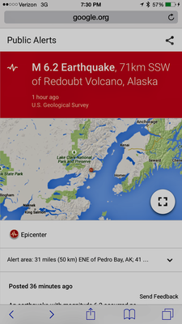
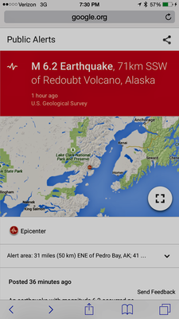

This is a brief recap of my trip Alaska in July 2017, followed by some of the amazing pictures I managed to capture. The map above highlights some of the places we passed through, or stopped at to try and give some perspective.
We (my Dad and I) landed in the Anchorage International Airport, where we were met by my Uncle Dean who lives in Alaska. We then went and picked up the RV we would be using for this adventure. From Anchorage we went North to Willow, AK (where my uncle has his cabin), and we spent the first night there. The following day we went out on 4x4's on some trails and visited the Goose Creek Tower (also called the Dr. Seuss House) and had some spectacular views of Denali in the distance. The following day we continued North, past Talkeetna (it's really fun to say) and Cantwell to one of the entrance into McKinley Park. The road was open all the way to the Savage River. While in the park we did see several moose, and ran into some people who said a bear had charged their car (luckily we didn't have any issues like that). We then headed back South to Cantwell, and spent the night camping along side the road. The following morning we began crossing the Denali Highway, which was really just a gravel road. What the road lacked in, well, road-ness (it apparently is a perfectly acceptable place to land a helicopter though), it made up for in views. This is one of the most peaceful places I have ever been. We stopped several times for small excursions (and picking the huckleberries that were everywhere) We eventually reached Paxson, and then headed North past Summit Lake, and into an unused campground. We did some hiking there without fully realizing just how long it stayed light out there. At 11:30pm I thought it was still mid-afternoon. The following day we headed South to Glennallen and then West to the Eureka Lodge for a 25 cent cup of coffee and some giant cinnamon rolls. We continued West to the Matanuska Glacier (a privately owned glacier that is open to explore). We spent most of the afternoon hiking out onto the glacier, and it was simultaneously one of the coolest and most terrifying things I have ever done, I don’t know that I would ever do it again, but I highly recommend everyone should try it. We then headed back through Anchorage (and saw a still operation Blockbuster) and out onto the Kenai Peninsula all the way to the Homer Spit. We were walking around the shops out on the dock when the earthquake hit, a M 6.2 across the bay. To us it was only a slight roll in the ground, at first I thought a boat had hit the dock, until I realized I was standing on the ground, and people on both docks were looking around (My uncle head later that people further away in Fairbanks had felt the ground move for almost 2 minutes). We spent the night there, and the next day headed back up the coast to do some fishing (the salmon were running). We met up with a co-worker of my dads and spent the afternoon fishing in the pouring rain. I managed to catch one that we later grilled and ate (to this day, no "fresh" salmon has ever come close). We headed back to Anchorage the next day to catch our flight home. It was quite an adventure, and this little blurb doesn’t quite do it justice.


 



.png)


.png)